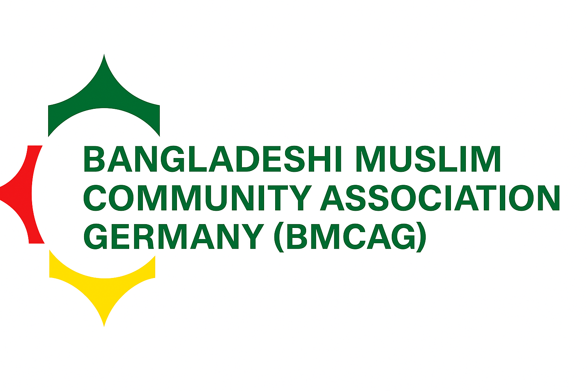
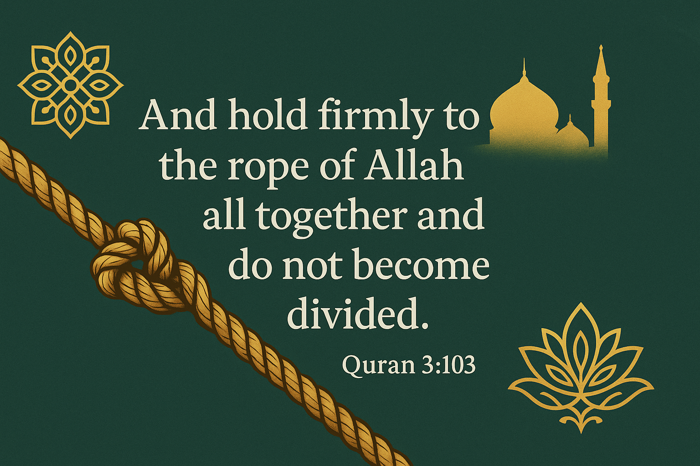

Leitbild
Eine tragfähige Plattform für Austausch und Unterstützung
Im Mittelpunkt steht eine Struktur, die kulturelle Vielfalt stärkt, gegenseitige Hilfe ermöglicht und die Anliegen der Gemeinschaft sichtbar macht.

Lokale Projektversion
Ramadan-KalenderMission
Die BMCAG versteht sich als verlässliche Plattform für Zusammenhalt, kulturellen Austausch und die Interessenvertretung der muslimischen bangladeschischen Gemeinschaft in Deutschland.

Leitbild
Im Mittelpunkt steht eine Struktur, die kulturelle Vielfalt stärkt, gegenseitige Hilfe ermöglicht und die Anliegen der Gemeinschaft sichtbar macht.
Schwerpunkte